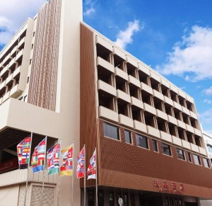
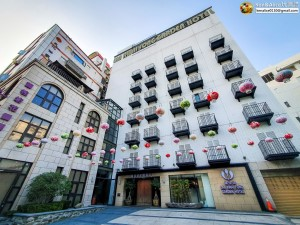
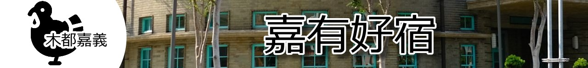

| 兆品酒店｜蘭桂坊花園酒店｜福泰桔子商旅 | |
| 兆品酒店 | |
|  | 兆品酒店嘉義位於商業鬧區邊緣，近著名的噴水圓環旁。鬧中取靜，白天文化路雙線幹道，人車絡繹不絕；夜晚可就近走訪在地知名的夜間市集；翌日還可前往以森林鐵道、日出馳名的阿里山天然美景觀光遊覽，充分體驗在地生活，為旅程增添記憶色彩。 資料來源:兆品酒店官網 |
| 蘭桂坊花園酒店 | |
|  | 嘉義是台灣的木頭原鄉，蘭桂坊花園酒店大廳特地大量運用台灣紅檜、黃檜、柚木，一走進大廳即可感受到一股寧靜安詳的木頭原味，在意呼應阿里山木業原鄉的獨有意境。 館內眾多典藏的骨董文物、藝術品擺飾，搭配明朝、清朝年代家具、原木桌椅、綠意花園設計，風格清新高雅，古典中帶著新意，猶如嘉義南故宮之外的另一個文化博物館。 |
| 福泰桔子商旅 | |
嘉義是台灣的木頭原鄉，蘭桂坊花園酒店大廳特地大量運用台灣紅檜、黃檜、柚木，一走進大廳即可感受到一股寧靜安詳的木頭原味，在意呼應阿里山木業原鄉的獨有意境。 館內眾多典藏的骨董文物、藝術品擺飾，搭配明朝、清朝年代家具、原木桌椅、綠意花園設計，風格清新高雅，古典中帶著新意，猶如嘉義南故宮之外的另一個文化博物館。 |
|
